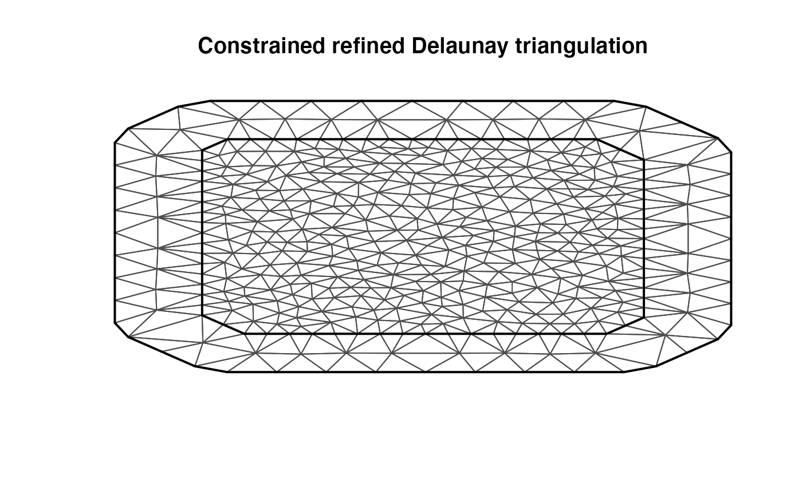

An introduction to the rSPDE package
David Bolin, Alexandre B. Simas, Zhen Xiong
2021-12-09
Source:vignettes/rSPDE.Rmd
rSPDE.RmdIntroduction
In this vignette we will provide a brief introduction to the rSPDE package by providing a simple data set and using the different functions in the package to analyze it.
We have three main “families” of functions inside the rSPDE package:
The
R-INLAimplementation of the rational SPDE approach;The covariance-based rational SPDE approach;
The operator-based rational SPDE approach.
We will analyze the same data set using all the three approaches. We also have specific vignettes for each of the aforementioned family. More precisely, we have the following additional vignettes:
Covariance-based rational approximation with the rSPDE package
Operator-based rational approximation with the rSPDE package
We will now begin by creating a toy data set.
A toy data set
For this illustration, we will simulate a data set on a two-dimentional spatial domain. To this end, we need to construct a mesh over the domain of interest and then compute the matrices needed to define the operator. We will use the R-INLA package to create the mesh and obtain the matrices of interest.
We will begin by defining a mesh over \([0,1]\times [0, 1]\):
library(INLA)
m =100
loc_2d_mesh = matrix(runif(m*2),m,2)
mesh_2d = inla.mesh.create.helper(
points=loc_2d_mesh,
cutoff=0.05,
offset=c(0.1,0.4),
max.edge=c(0.05,0.5) )
plot(mesh_2d)
points(loc_2d_mesh[,1],loc_2d_mesh[,2])
There are two matrices we need to create the approximation of a basic Matérn model. These matrices are the mass matrix \(\boldsymbol{\mathrm{C}}\), with elements \(C_{ij} = \int \varphi_j(s) \varphi_i(s) ds\), and the stiffness matrix \(\boldsymbol{\mathrm{G}}\), with elements \(G_{ij} = \int \nabla\varphi_j(s) \cdot \nabla\varphi_i(s) ds\).
Now, let us compute these matrices for this mesh using INLA’s inla.fem.mesh() function:
fem_mesh_2d <- inla.mesh.fem(mesh_2d)
C = fem_mesh_2d$c0
G <- fem_mesh_2d$g1We want to use these matrices to simulate Gaussian latent fields with Matérn covariance. To this end, we have two functions possibilities: simulate the latent field using the operator-based rational approximation or using the covariance-based rational approximation. We will use both of them, and consider the realizations as replicates. We will generate 20 independent replicates from the operator-based rational approximation and 20 independent replicates from the covariance-based rational approximation.
Let \(\mathbf{X}_1\) be